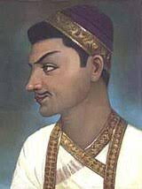

History of Hyderabad
Hyderabad's history spans centuries from the Qutb Shahi dynasty that built the earliest monuments and the founding of the city to the rule of the Nizams, whose influence shaped architecture, language, and institutions.

Qutb Shahi Dynasty
The Qutb Shahi dynasty (1518-1687) established the Golconda Sultanate and built landmarks such as the Charminar and Golconda Fort.
Nizams of Hyderabad
The Nizams governed Hyderabad for centuries and contributed greatly to the city's cultural and built heritage.
Major Events
- Founding and early development under Qutb Shahi
- Expansion and Cultural flowering under the Nizams
- Integration into the modern Republic of India